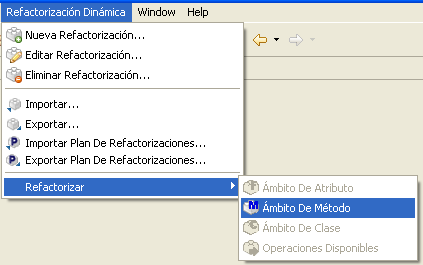

Ejecutar Refactorizaciones: Operaciones con �mbito de M�todoEjecutar Refactorizaciones: Operaciones con �mbito de M�todo
Ejecutar Refactorizaciones: Operaciones con �mbito de M�todoEjecutar Refactorizaciones: Operaciones con �mbito de M�todoCuando haya seleccionado un m�todo de una clase en el �rbol de la vista "Package Explorer" o cualquier otra vista de Eclipse, se activar�n las refactorizaciones disponibles con �mbito de m�todo. Para ejecutar cualquiera de ellas, existen dos posibilidades.
Haga clic con el bot�n derecho del rat�n en el m�todo sobre el que quiere aplicar la refactorizaci�n, y seleccione el elemento Refactorizaci�n Din�mica > �mbito De M�todo en el menú desplegable que aparecer�.

menú desplegable: �mbito De M�todo
Seleccione la opci�n de menú Refactorizaci�n Din�mica > Refactorizar > �mbito De M�todo en Eclipse.

Una vez que le indique al plugin que desea ejecutar una refactorizaci�n sobre el elemento seleccionado, se empieza a construir el modelo interno que se utilizar�. Cuando el proceso finalice, aparecera� una ventana de selecci�n con las refactorizaciones con �mbito de m�todo disponibles.

Refactorizaciones con �mbito de m�todo
Es ahora cuando debe seleccionar la refactorizaci�n qeu quiere aplicar. Una vez que ha seleccionado una,
pulse el bot�n Aceptar para iniciar el proceso de refactorizaci�n.
Cuando se selecciona un m�todo de las vistas de Eclipse, la vista "Refactorizaciones dsiponibles" actualiza su contenido con las refactroizaciones de �mbito de m�todo. Despu�s se de hacer un doble-click en alguna de ellas para comenzar su ejecuci�n.

vista "Refactorizaciones disponibles"
Consulte la documentaci�n de las tarea relacionada m�s abajo para obtener informaci�n m�s detallada acerca de la configuraci�n y ejecuci�n de las refactorizaciones.